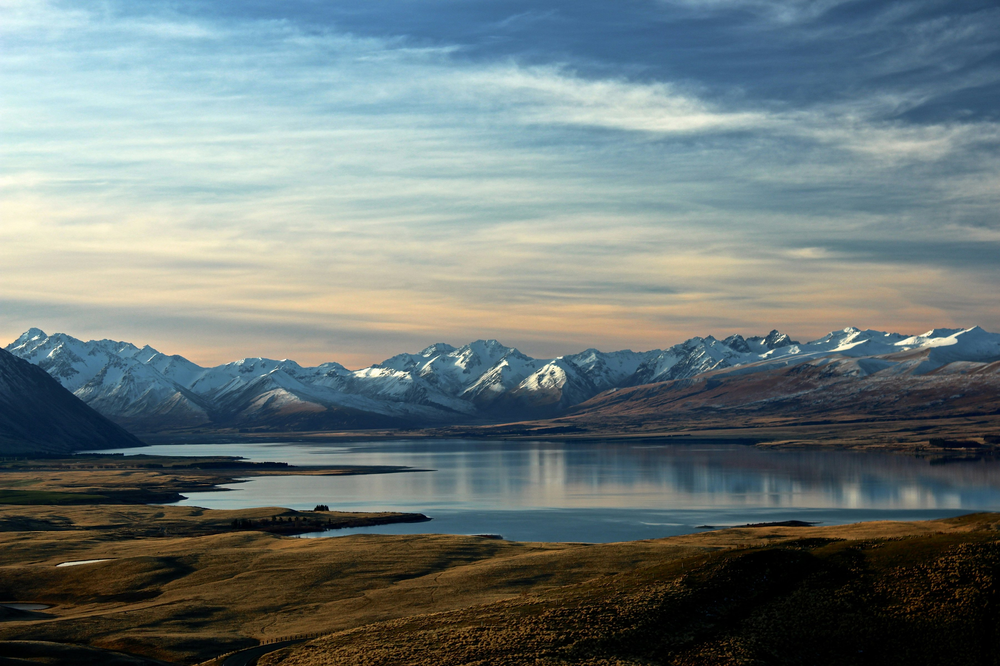
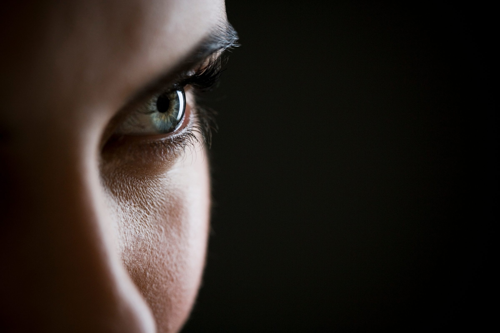
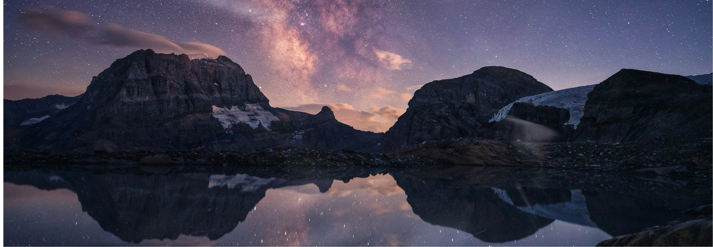

The studio
Brands that move —
Brands that move —
fast, and with clarity.
The studio


Infinit® is a brand & strategy studio built on one belief: branding is a craft — and craft is made by people.


Experience across
Almirall, Desigual, Casa Tarradellas, Mercadona, Santander, MartiDerm, Girbau, Seidor, Repsol, SAP & Glovo.
All led hands-on by  Cesc Callejas — two decades on both sides of the table: building brands, and running the operations that depend on them. No layers. You work with him.
Cesc Callejas — two decades on both sides of the table: building brands, and running the operations that depend on them. No layers. You work with him.